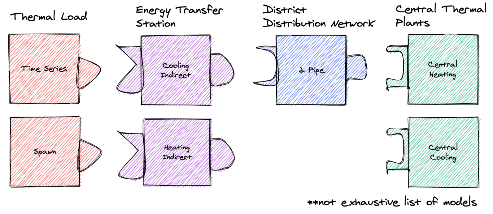

Developer Resources¶
Tests¶
Tests are run with pytest, e.g.
poetry run pytest
Snapshot Testing¶
Some tests use syrupy to compare generated modelica models to saved “snapshots” of the models (saved as .ambr files).
Snapshots should only be updated if we have changed how a model is generated, and we know the new version of the model is the correct version. To update all snapshots, you can run the following and commit the new snapshot files.
poetry run pytest --snapshot-update
Design Overview¶
The GMT is designed to create an arbitrary number of user-configured models connected to other user-configured models to represent a district energy system. GMT has “building blocks” that it uses to define and connect models, which currently include: Energy Transfer Stations (ETSs), Loads, Networks, and Plants.

Each block type is a collection of models, e.g. the Loads includes time series and spawn models. A model in GMT refers to an abstracted Modelica model. It generates Modelica code (the Modelica model) and is used to define connections to other models.
Each block type can “connect” (note this “connect” does not refer to Modelica’s concept of “connect”) to other specific block types. For example, you can connect a load to an ETS, but you cannot connect a load to a network. However, some models (i.e. 5G) have an ETS embedded in them.
Each block type has a corresponding directory inside of geojson_modelica_translator/model_connectors, which contains its different model types (e.g. for Loads it contains the Time Series model and others).
Because models are different, even within a block type (e.g. different properties and maybe even ports), the GMT uses the concept of couplings for connecting models. Couplings define how two specific models connect in modelica. For example, a coupling could define how the time series load actually connects to the heating indirect ETS.
– As an aside, if the GMT reached a point where all models within a block type implemented the same interface then couplings would not be necessary.
Getting Started as a Developer¶
There are a few steps that are imperative to complete when starting as a developer of the GMT. First, make sure to follow the detailed instructions for Docker Installation in the Getting Started guide.
Follow the instructions below in order to configure your local environment:
Get the Modelica Buildings Library. See the documentation at MBL Installation
- Clone the GMT repo into a working directory
(optional/as-needed) Add Python 3 to the environment variables
As general guidance, we recommend using virtual environments to avoid dependencies colliding between your Python projects. venv is the Python native solution that will work everywhere, though other options may be more user-friendly.
- Some popular alternatives are:
pyenv and the virtualenv plugin work together nicely for Linux/Mac machines
- For developers, dependency management is through Poetry. Poetry can be acquired by running
pip install poetry. If you haven’t already installed a virtual environment, Poetry will automatically create a simplified environment for your project.
- For developers, dependency management is through Poetry. Poetry can be acquired by running
Move to the GMT root directory and run
poetry installto install the dependencies.Verify that everything is installed correctly by running
poetry run pytest -m 'not compilation and not simulation and not dymola'. This will run all the unit and integration tests.Follow the instructions below to install pre-commit.
To test pre-commit and building the documentation, you can run
poetry run pytest -m 'not compilation and not simulation and not dymola' --doctest-modules -v --cov-report term-missing --cov .
The tests should all pass assuming the libraries, Docker, and all dependencies are installed correctly on your computer. Also, there will be a set
of Modelica models that are created and persisted into the tests/GMT_Lib/output folder and the
tests/model_connectors/output folder. These files can be inspected in your favorite Modelica editor.
Pre-commit¶
This project uses pre-commit to ensure code consistency. To enable pre-commit for your local development process, run the following from the command line from within the git checkout of the GMT:
pre-commit install
To run pre-commit against the files without calling git commit, then run the following. This is useful when cleaning up the repo before committing. CI will fail if pre-commit hasn’t been run locally.
pre-commit run --all-files
Managed Tasks¶
Updating Schemas¶
There is managed task to automatically pull updated GeoJSON schemas from the urbanopt-geojson-gem GitHub
project. A developer can run this command by calling
poetry run update_schemas
The developer should run the test suite after updating the schemas to ensure that nothing appears to have broken. Note that the tests do not cover all of the properties and should not be used as proof that everything works with the updated schemas.
Adding New Models¶
To add a new model you have to do the following:
Define the model’s python class: First, create a new python file and class under its respective directory in model_connectors. Follow the patterns of existing classes.
Create coupling files: For every model that can be linked to, create a <ModelA>_<ModelB> directory in the couplings directory. The two files ComponentDefinitions.mopt and ConnectStatements.mopt must exist in this directory. See more information on the content of the coupling files below in the Couplings sections.
Create the instance file: In the templates directory, you must define <ModelName>_Instance.mopt which is the template that instantiates the system in the district model.
See the notes below for more information.
Couplings¶
A coupling defines the Modelica code necessary for interfacing two specific models, e.g. a time series load and heating indirect ETS. Each coupling is unique in its requirements:
what additional components are necessary, for example there might be some sensor between system A and B, or maybe B requires a pump when A is a specific model type
what ports are connected, for example connecting ports of model A and model B
Thus each coupling must define two template files, ComponentDefinitions.mopt and ConnectStatements.mopt, respectively. These files must be placed in the directory couplings/templates/<model A>_<model B>/.
In general, the order of the names should follow the order of system types if you laid out the district system starting with loads on the far left and plants on the far right (e.g. load before ETS, ETS before network, network before plant)
District system¶
A district system is the model which incorporates all of the models and their couplings.
Templating Flow¶
When rendering the district system model file, it must:
call to_modelica() for each model to generate its Modelica code
render the coupling partial templates (ie the Modelica code required for couplings)
render the model instance definition (ie the Modelica code which instantiates the model)
insert the coupling partials and model instance definitions into the district Modelica file
Refer to DistrictEnergySystem.mot and District() for reference.
Each templating step has access to a particular set of variables, which is defined below.
Summary of Templating Contexts¶
Model Definition¶
Each model generates one or more Modelica files to define its model. The templating context is implementation dependent, so refer to its to_modelica() method.
Coupling Component Definitions¶
This is the template which defines new components/variables necessary for a coupling. More specifically, these are the partial template files at model_connectors/couplings/templates/<coupling name>/ComponentDefinitions.mopt. These templates have access to:
globals: global variables (those defined in the district.py, such as medium_w = MediumW)coupling: contains the coupling id, as well as references to the coupled models under their respective types (e.g. coupling.load.id or coupling.network.id). You should appendcoupling.idto any variable identifiers to prevent name collisions. For example, instead of just writingparameter Modelica.Units.SI.MassFlowRate mDis_flow_nominalyou should doparameter Modelica.Units.SI.MassFlowRate mDis_flow_nominal_{{ coupling.id }}as well as any place where you would reference that variable.graph: an instance of the CouplingGraph class, where all couplings are located. It can provide useful methods for accessing couplings throughout the entire system. Refer to the python class to see what it can do.sys_params: an object containing data from the system parameters file -district_system: contains the data from the district_system portion of the system parameters file -building:if the coupling includes a load, this object will be included as well – if there’s no as part of the coupling this object will NOT be present. It contains the building-specific system parameters pulled from the system parameters JSON file.
Coupling Connect Statements¶
This is the template which defines connect statements to be inserted into the equation section. More specifically, these are the partial template files at model_connectors/couplings/templates/<coupling name>/ConnectStatements.mopt. These templates have access to:
globals: same as Coupling Component Definitions contextcoupling: same as Coupling Component Definitions context. Just like with the component definitions template, you should use the coupling.id to avoid variable name collisions.graph: same as Coupling Component Definitions contextsys_params: same as Coupling Component Definitions context
Model Instance¶
This template is used to declare a model instance.
globalsgraphcouplings: contains each coupling the model is associated with. For example, if our ETS was coupled to a load and network, couplings would look like{ load_couplings: [<load coupling>], network_couplings: [<network coupling>] }. This can be used to access coupling and model ids.model: contains info about the model instance, includingmodelica_typeandid. These should be used to define the model, for example{{ model.modelica_type }} {{ model.id }}(...)sys_params: same as Coupling Component Definitions context
Simulation Mapper Class / Translator¶
The Simulation Mapper Class can operate at multiple levels:
The GeoJSON level – input: geojson, output: geojson+
The Load Model Connection – input: geojson+, output: multiple files related to building load models (spawn, rom, csv)
The Translation to Modelica – input: custom format, output: .mo (example inputs: geojson+, system design parameters). The translators are implicit to the load model connectors as each load model requires different paramters to calculate the loads.
In some cases, the Level 3 case (translation to Modelica) is a blackbox method (e.g. TEASER) which prevents a simulation mapper class from existing at that level.
Running Simulations¶
The GeoJSON to Modelica Translator contains a ModelicaRunner.run_in_docker(...) method. The test suite uses this to run most of our models with OpenModelica.
Release Instructions¶
Bump version to <NEW_VERSION> in pyproject.toml (use semantic versioning).
Ensure mbl_version() in geojson_modelica_translator/utils.py is returning the correct MBL version.
Run
poetry updateto ensure the lock file is up to date with the latest “pinned” dependencies.Run
pre-commit run --all-filesto ensure code is formatted properly.Create a PR into develop with the updated version.
Go to GitHub release page and create a temp release tag to generate the CHANGELOG.
Copy in the CHANGELOG entries that are relevant to the new version, commit, push, and merge after CI passes.
Create a PR against develop into main.
After main branch passes, merge and checkout the main branch. Build the distribution using the following code:
# Remove old dist packages
rm -rf dist/*
Run
git tag <NEW_VERSION>.Run the following to release.
poetry publish --build
Enter your PyPI username and password
(If the build fails) verify that the files in the dist/* folder have the correct version (no dirty, no sha).
Build and release the documentation.
# Build and verify with the following
cd docs
poetry run make html
cd ..
# release using
./docs/publish_docs.sh
Run
git push origin <new_tag_version>Verify new documentation on the docs website.